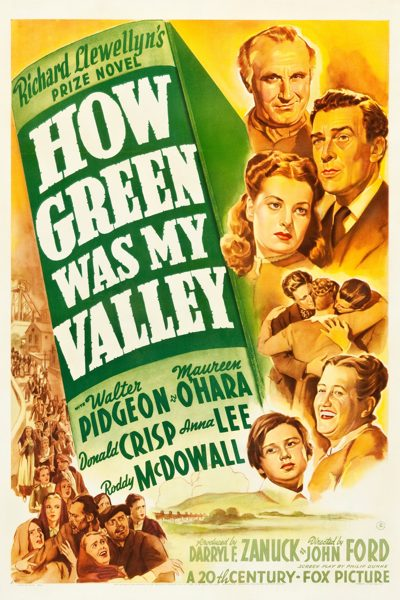

How Green Was My Valley
Starring: Walter Pidgeon, Maureen O'Hara, Anna Lee
Director: John Ford
Writer: Philip Dunne
Producer: Darryl F. Zanuck
How Green Was My Valley is a 1941 American drama film directed by John Ford, adapted by Philip Dunne from the 1939 novel of the same title by Richard Llewellyn. It stars Walter Pidgeon, Maureen O'Hara, Anna Lee, Donald Crisp, and a young Roddy McDowall.
Trivia
- Won the Academy Award for Best Picture.
- Won the Academy Award for Best Supporting Actor.
- Won the Academy Award for Best Director.
- Won the Academy Award for Best Cinematography, Black-and-White.
- Won the Academy Award for Best Art Direction, Black and White.
- Selected for the National Board of Review: Top Ten Films.
- Also nominated for: Academy Award for Best Supporting Actress; Academy Award for Best Film Editing; Academy Award for Best Writing, Adapted Screenplay; Academy Award for Best Original Dramatic Score; and 1 more.
- Based on How Green Was My Valley (1939 novel by Richard Llewellyn).
- Fox wanted to shoot the movie in Wales in Technicolor, but it was impossible to do so during World War II. Instead, Ford had the studio build an 80-acre representation of a typical Welsh mining town at Brent's Crags (subsequently Crags Country Club) in the Santa Monica Mountains near Malibu, California.
- John Ford originally hired Rhys Williams, the film's Welsh dialect coach, to record the film's narration as Older Huw.
- Shortly before release, he had the narration re-dubbed by Irving Pichel, afraid that audiences might recognize Williams' voice from his onscreen role as Dai Bando and be confused.
Filming Locations
- Malibu
Previous Showings
5 Runs • 1 Festival
Original Billings: 1 run (January 25, 1942)
Original Run: January 25, 1942 (Sunday - Wednesday)
All runs on record (5):
- January 25, 1942 (Sunday - Wednesday)Walter Pidgeon, Maureen O'Hara
- December 14 - 16, 1991w/ Tobacco Road
- April 29 - 30, 1993w/ Rebecca
- May 12 - 14, 1995w/ Wuthering Heights
- October 20, 200620th Century-Fox Film Festivalw/ Forever Amber